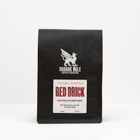

Square Mile Coffee Roasters
A multi-award-winning coffee roasting company, Square Mile Coffee Roasters was founded in 2008 by speciality coffee pioneers, Anette Moldvaer and James Hoffmann. Synonymous with London coffee culture, we’ve grown to be a dynamic team of talented coffee professionals, all sharing a wealth of experience and passion for what we do.
Focused on wholesale, we choose to work with, train and support like-minded businesses wishing to serve our mindfully sourced and skillfully roasted coffee to the best of their ability.
Curious, we’re on a mission to continually evolve, measuring our impact and looking for better solutions to our everyday tasks. By working together and supporting our partners across the supply chain, we strengthen our relationships, build expertise and contribute towards placing London speciality coffee & culture on the map. We pride ourselves on the exceptional quality coffee we source, buy, import, roast, and deliver internationally.
Our Coffee
Kilimanjaro
Opening the Kilimanjaro Espresso Focus this year is a honey-processed lot. Sweet, balanced, and velvety, it is a shining example of Aida Batlle’s work and the quintessential expression of textural coffee.
Kainamui
Who remembers that aha moment you had with your first Kenyan coffee—the bright, juice bomb acidity amplified by the mouthfeel and complexity? Kainamui, a classic example of coffee from Kirinyaga County in Kenya’s central highlands, took us back to that first time.

Sweetshop
The idea behind our Sweetshop blend is simple: combine sweet and characterful coffee to create a fun, wildly complex and fruit-driven espresso.
Red Brick
As the crops change, so do the components of our Red Brick, highlighting harvest cycles and celebrating the seasonality of coffee. We’ve combined the great fruit qualities from each component, and allowed the sweetness to shine.
El Jardín
From the La Paz department in Honduras, dark chocolate coated cherries dazzle in El Jardín. Tasty with or without milk, this will be your go-to morning espresso!
Decaf Espresso
Smooth and sweet, notes of orange and chocolate enrich the latest Decaf, Telila from Jimma, Ethiopia!
Piedras Amarillas
A classic cup with a fruity twist, notes of chewy nougat and fresh red apple make Piedras Amarillas from Santa Bárbara, Honduras, a perfect morning coffee and sharing brew.
The Filter Blend
Built on the same concept as our Red Brick Espresso Blend, The Filter Blend is seasonal, versatile and classic Square Mile. Clean, balanced and medium-bodied; a kind, welcoming coffee to wake up to The Filter Blend offers the perfect all-day everyday brew and embodies all we love about speciality coffee. An absolute delight, you’ll want to keep a bag in the cupboard to always have delicious coffee in the house.
Kochere
If you like washed Ethiopian coffees, Kochere, with its sweet, floral, tea-like Yirgacheffe essence, is definitely for you.
Half Caff
The latest Half Caff has landed, and it combines two exciting debuts! Blending Los Acros from Jalapa, Huehuetenango, with decaf Telila from Jimma, Ethiopia, this filter is a sweet, silky sensation with notes of cherry and nougat.
Decaf Filter
When brewing our decaf filter, we recommend a similar grind size as when brewing your preferred filter coffee method. We recommend a ratio of 70g of coffee / 1L of water, for example 35g of coffee for 500g of water. Adjust to personal preference.